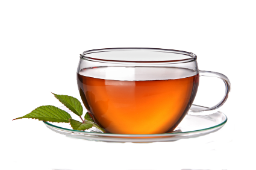

There are many types of teas in the world, and to be honest, most of them are only slightly different.
Super Butterfly Oolong by unknown ,
courtesy of Elite teas: Super Butterfly Oolong
Oolong Tea by Sunny Island Tea Co. Brown Bag
Package by unknown , courtesy of Sunny Island
A traditional Chinese tea, made from the Camellia sinensis. It is produced by keeping the leaves under intense sun and oxidation until it shrivels up before curling and twisting. They most often are made with plant cultivators that are exclusively used for certain varieties of the tea (this is especially true for fine quality teas). The oxidization process can vary greatly depending on who is making it, and the degree can range from 8-85%. In terms of tea experts, oolong is popular in south China, as well as the ones who live out of the country, but still, live in southeast Asia.

Black Tea by Sunny Island Tea Co.
Brown Bag Package by unknown, courtesy of Sunny Island
Tea PNG Transparent Images by Rojal,
courtesy of PNG All
More oxidized than oolong, white, and green tea, black tea has a stronger flavour than the rest. It, along with the other three, are made of the shrub Camellia sinensis. There are two main varieties of this tea produced; the small-leaved Chinese plant, and the large-leaved Assamese plant( known as C. sinensis subsp. Sinensis and C. sinensis subsp. Assamica, respectively). The small one is used for most types of teas, and the large one was mainly used for black tea until recently, as it has started to be used for green and white tea.
Silver Needle White Tea by Unknown,
courtesy of Grey Moutain Herbs
White Tea by unknown, courtesy of lcsd
The name white tea comes from the white hairs on the unopened tea-plant buds, as the drink itself, is more of a yellowish colour. Hey, who would've guessed it - it is also made of the Camellia sinensis plant. There are large disagreements as to what white tea actually is. It comes generally from the buds and leaves of the plant, which are allowed to naturally wither and dry in the sun. It varies between a minimally processed tea and-and tea made from young plants. In terms of where it's normally harvested, it happens mainly in China but recently has also grown in Eastern Nepal, Taiwan, Northern Thailand, Galle (Southern Sri Lanka) and India.
Green-Tea by Giancarlo Marcaccini,
courtesy of Villa Dolce Gelato
Green Tea PNG Transparent Images by Rojal ,
courtesy of PNG All
Hey, hey, you'll never believe this… it's made from the Camellia sinensis plant! I know, right? The leaves of the plant go through minimal oxidation to create the tea. It originated in China but is linked to many Asian cultures. Fast fact: in China, the word for tea only refers to green tea. It has also come quite popular in the western world, in which black tea is normally consumed. Green tea is also the tea of choice for things like weight loss, as it is believed to have many positive health effects. These beliefs are without scientific proof, though. It can be found in many diet supplements, beauty products, and, oddly enough, other beverages. There are many varieties, most varying only subtlety depending on how the plant is grown and prepared.
Yellow tea, the most expensive and rare type of tea, is produced like, green tea, but with another step. After oxidization, it is steamed under a damp cloth, which is what gives the tea it's yellow colouring, and so it's named. This also makes the tea taste less like a plant than green tea.
For anywhere from months to years, this tea has undergone a fermentation. The tea leaves are exposed to humidity and oxygen also causing endo-oxidation and exo-oxidation. With this oxidation, the tea leaves and liquor become darker, making this type of tea also referred to as dark tea.
Pu Erh tea by unknown, courtesy of Sinotea
Pu-erh, also know as Pu'er is the most popular type of fermented tea, and is mainly produced in the Yunnan province of China. It is named after Pu'er city. Since it's earliest production, pu'er had begun as a raw product known as 'rough' and can be sold in this form. It can also be pressed into different shape and can be sold 'raw'. After this, they start fermenting over time. One of the processes used was developed in 1973 by the Kunming tea factory. They created a type if Pu'er tea that involved a faster means of fermentation in the production. It is stored loose or pressed into shapes. Technically, this process was developed at the Menghai Tea Factory, after it was adopted here. This type of tea is generally labeled with the year and region of production, as it can sit around for a while.
Flowering Tea by unknown,
courtesy of The Exotic Teapot
Flowering tea gets its name from the way it expands when boiled in hot water. It is made up dried tea leave packed around dried flowers. This is done by almost combining the leaves and flowers and then drying them together so that they stay in that form. Once again, they are generally made in the Yunnan province. Globe amaranth, chrysanthemum, jasmine, lily, hibiscus, and osmanthus are the main flowers used within the 'bulb'. They are served in containers made of glass, for obvious reasons.
Good Health Teas by unknown,
courtesy of Good Health Teas
Herbal tea, also known as the tisane, is the debatable sort of tea. It can be made from any sort of herbs, spices, or other sorts of plants being infused into water, and usually, does not have caffeine in it. It is not quite the same as the 'true' teas (the ones made from the Camellia sinensis plant) or decaffeinated tea, which simply has the caffeine removed. In many languages, this type of tea can not be referred to as 'tea' as it does not contain the Camellia sinensis plant.
All About Tea Tea Tea by unknown,
courtesy of Moose Hoof
Mate tea is a South American tea which has for more caffeine-rich than the other types and is largely in drunk Argentina (where it is defined by law as the "national infusion") Uruguay, Paraguay, the Bolivian Chaco and Southern Brazil, and in southern Chile. Prepared by steeping the dried leaves of yerba mate, it is server in a shared gourd with a metal straw. The straw goes by many names, such as bombilla (Spanish), bomba (Portuguese) and bombija/masassa (Arabic), and is traditionally made with silver. Nowadays it can be made with nickel silver (alpaca), stainless steel, or hollow-stemmed cane. The yerba mate leaves are dried, chopped, and ground into a mixture known as yerba.They are prepared in the gourd without a steeper, as the straw acts as one itself. It blocks the chunky yerba matter but allows all of the liquid to go through.
Note that with the image references on this page, the first one always matches the left image while the second one matches the right.